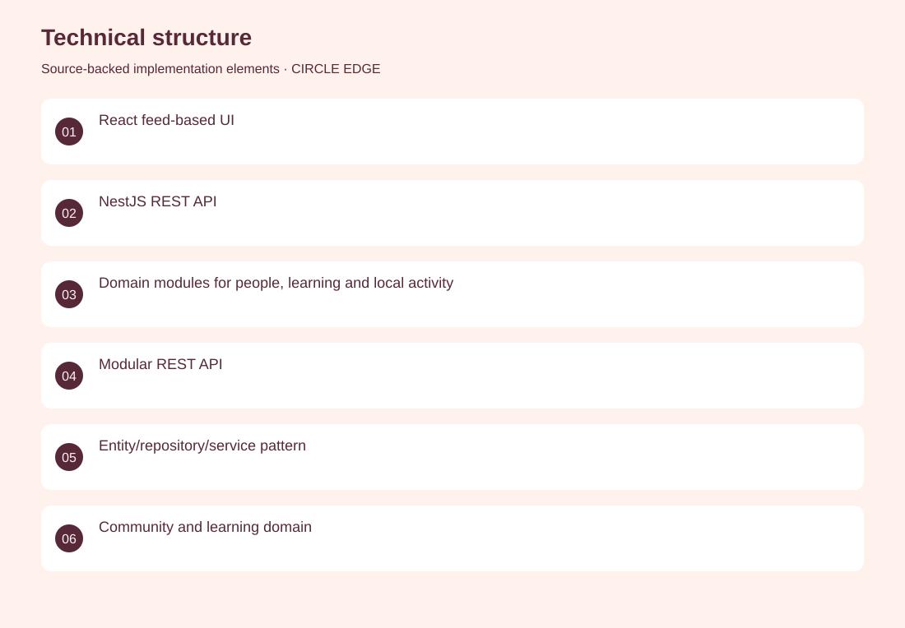
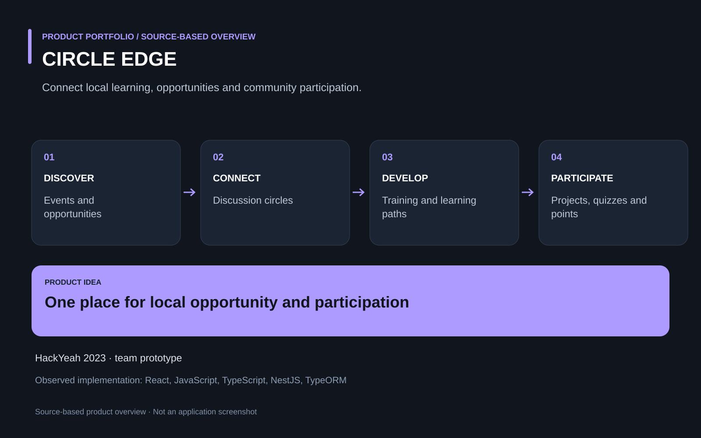

The project
Local opportunities, training and community activity are often fragmented across separate channels. A hackathon platform brings together events, job opportunities, projects, quizzes, discussions and development paths in one web experience. Co-developed the application with the team, contributing to the integrated frontend and data-driven product experience. HackYeah 2023 prototype; first-place PFR challenge result was established in the existing LinkedIn project.
The problem
Local opportunities, training and community activity are often fragmented across separate channels.
The solution
A hackathon platform brings together events, job opportunities, projects, quizzes, discussions and development paths in one web experience.
My contribution
Co-developed the application with the team, contributing to the integrated frontend and data-driven product experience.
Technical structure

Product overview

The portfolio cover is an editorial illustration. No live product screenshot is presented for this project.
Showcase assets
{kind=link}
{kind=link}
{kind=link}
New portfolio identity. Newly designed marks are portfolio treatments, not claims of official client branding.